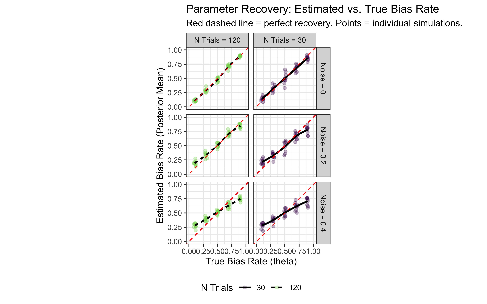

Chapter 5 From simulation to model fitting
In Chapter 3, we formalized verbal models into computational agents and explored their behavior through simulation by setting their parameters (like bias rate or WSLS rules). However, when analyzing real experimental data, we don’t know the true parameter values underlying a participant’s behavior. The core task shifts from simulation to parameter estimation: inferring the plausible values of model parameters given the observed data.
5.1 Learning Goals
This chapter transitions from simulating predefined models (Chapter 3) to inferring model parameters from data using Bayesian methods. By the end of this chapter, you will be able to:
- Understand Parameter Estimation: Grasp the core challenge of estimating unobservable model parameters (like cognitive biases or memory effects) from observable behavioral data (like choices).
- Implement Bayesian Models in Stan: Write basic Stan programs to specify cognitive models, including defining data, parameters, priors, and the likelihood function .
- Fit Models with
cmdstanr: Use thecmdstanrinterface to compile Stan models and sample from the posterior distribution of parameters. - Interpret Model Output: Understand and visualize basic MCMC diagnostics (trace plots) and parameter estimates (posterior distributions, prior-posterior updates).
- Perform Parameter Recovery: Design and execute simulations to verify that your Stan model and fitting procedure can accurately recover known parameter values, a crucial step in model validation.
- Model Cognitive Processes: Apply these techniques to estimate parameters for simple cognitive strategies, including biased choice and different types of memory models (GLM-like, internal state, exponential forgetting, Bayesian updating).
- Understand Log-Odds: Appreciate the utility of the log-odds transformation for modeling probability parameters.
5.2 The Challenge: Inferring Latent Parameters
Why is this a challenge? 1. Parameters are Unseen: Cognitive parameters (like bias strength, memory decay, learning rate) are not directly observable; we must infer them from behavior (choices, RTs, etc.). 2. Behavior is Noisy: Human behavior is variable. Our models need to account for this noise while extracting the underlying parameter signal. 3. Model Plausibility: We need to determine not just if a model fits, but how well it fits, and whether the estimated parameter values are theoretically meaningful.
Consider the biased agent from Chapter 3. We simulated agents with a known rate. Now, imagine you only have the sequence of choices (the h data) from an unknown agent. How can you estimate the underlying rate that most likely generated those choices?
Our Approach: Bayesian Inference with Stan
This chapter introduces Bayesian inference as our primary tool for parameter estimation. As previewed in Chapter 1, the Bayesian approach allows us to combine prior knowledge about parameters with information from the observed data (likelihood) to arrive at an updated understanding (posterior distribution) of the parameters. We will use Stan, a powerful probabilistic programming language, implemented via the cmdstanr R package, to:
- Specify Models: Define our cognitive models formally, including parameters and their prior distributions.
- Fit Models: Use Stan’s algorithms (primarily Markov Chain Monte Carlo - MCMC) to sample from the posterior distribution of parameters given the data.
- Evaluate Fits: Examine the results to understand parameter estimates and their uncertainty.
As a crucial validation step, we will first apply these methods to simulated data, where we know the true parameters. This allows us to check if our models and fitting procedures work correctly – a process called parameter recovery.
5.3 Simulating data
As usual we start with simulated data, where we know the underlying mechanisms and parameter values.
Simulated data are rarely enough (empirical data often offer unexpected challenges), but they are a great starting point to stress test your model: does the model reconstruct the right parameter values? Does it reproduce the overall patterns in the data?
Here we build a new simulation of random agents with bias and noise. The code and visualization is really nothing different from last chapter.
# Flag to control whether to regenerate simulation/fitting results
# Set to TRUE to rerun everything (takes time!), FALSE to load saved results.
regenerate_simulations <- FALSE # Or TRUE
# Load required packages using pacman::p_load
# This function installs packages if missing, then loads them.
pacman::p_load(
tidyverse, # Data manipulation and plotting (ggplot2, dplyr)
here, # Robust file path management (optional but recommended)
posterior, # Working with posterior distributions
cmdstanr, # Interface to Stan
brms, # High-level interface for Bayesian models (used briefly)
tidybayes, # Tidy manipulation of Bayesian model output
furrr, # Parallel processing for parameter recovery
future # Backend for furrr
)
# Optional: Set a default ggplot theme
theme_set(theme_classic())
# --- Simulate Data for Fitting ---
# Goal: Generate data from known models/parameters to test our fitting procedures.
trials <- 120 # Number of trials per simulated agent
# Define the agent function (copied/adapted from Chapter 3 for self-containment)
# This agent chooses '1' with probability 'rate', potentially adding noise.
RandomAgentNoise_f <- function(rate, noise) {
# Ensure rate is probability (in case log-odds are passed, though not here)
rate_prob <- plogis(rate) # Assumes rate might be log-odds; use identity if rate is already probability
choice <- rbinom(1, 1, rate_prob) # Base choice
if (noise > 0 && runif(1) < noise) { # Check if noise occurs
choice <- rbinom(1, 1, 0.5) # Override with random 50/50 choice
}
return(choice)
}
# --- Generate Data Across Different Conditions ---
# Define relative paths for saving/loading simulation data
sim_data_dir <- "simdata" # Assumes a 'simdata' subdirectory
sim_data_file <- here(sim_data_dir, "04_randomnoise.csv")
# Create directory if it doesn't exist
if (!dir.exists(sim_data_dir)) dir.create(sim_data_dir)
if (regenerate_simulations || !file.exists(sim_data_file)) {
cat("Generating new simulation data...\n")
# Use expand_grid for cleaner parameter combinations
param_grid <- expand_grid(
noise = seq(0, 0.5, 0.1), # Noise levels
rate = seq(0, 1, 0.1) # Bias rate levels (probability scale)
)
# Use map_dfr for efficient simulation across parameters
d <- pmap_dfr(param_grid, function(noise, rate) {
# Simulate choices for one agent/condition
choices <- map_int(1:trials, ~RandomAgentNoise_f(qlogis(rate), noise)) # Convert rate to log-odds for function if needed
# Create tibble for this condition
tibble(
trial = 1:trials,
choice = choices,
true_rate = rate, # Store the true rate used for generation
true_noise = noise # Store the true noise used
)
}) %>%
# Calculate cumulative rate for visualization
group_by(true_rate, true_noise) %>%
mutate(cumulative_rate = cumsum(choice) / row_number()) %>%
ungroup()
# Save the generated data
write_csv(d, sim_data_file)
cat("Generated new simulation data and saved to", sim_data_file, "\n")
} else {
# Load existing simulation data
d <- read_csv(sim_data_file)
cat("Loaded existing simulation data from", sim_data_file, "\n")
}## Loaded existing simulation data from /Users/au209589/Dropbox/Teaching/AdvancedCognitiveModeling23_book/simdata/04_randomnoise.csv# --- Visualize Simulated Data ---
# Plot cumulative rate, faceted by noise level
p1 <- ggplot(d, aes(x = trial, y = cumulative_rate, group = true_rate, color = true_rate)) +
geom_line(alpha = 0.8) +
geom_hline(yintercept = 0.5, linetype = "dashed") +
scale_color_viridis_c() + # Use perceptually uniform color scale
facet_wrap(~paste("Noise =", true_noise)) + # Facet by noise level
labs(
title = "Simulated Choice Behavior (Cumulative Rate)",
subtitle = "Agents with different bias rates and noise levels",
x = "Trial Number",
y = "Cumulative Proportion Choosing 'Right'",
color = "True Bias Rate"
) +
theme_minimal() +
ylim(0, 1)
print(p1)
5.4 Building our First Stan Model: Inferring Bias Rate
N.B. Refer to the video and slides for the step by step build-up of the Stan code.
Let’s use Stan to estimate the underlying bias rate (which we’ll call theta in the model) from just the sequence of choices (h) generated by one of our simulated agents. We’ll start with a simple case: an agent with rate = 0.8 and noise = 0.
Preparing Data for Stan Why a list? Well, dataframes (now tibbles) are amazing. But they have a big drawback: they require each variable to have the same length. Lists do not have that limitation, they are more flexible. So, lists. We’ll have to learn how to live with them.
# Subset data for one specific agent simulation (rate=0.8, noise=0)
d1 <- d %>% filter(true_rate == 0.8, true_noise == 0.0) # Make sure noise level matches
# Stan requires data in a list format
data_for_stan <- list(
n = trials, # Number of trials (integer)
h = d1$choice # Vector of choices (0s and 1s) for this agent
)
str(data_for_stan) # Show the structure of the list## List of 2
## $ n: num 120
## $ h: num [1:120] 1 1 1 1 1 1 0 1 1 1 ...5.4.1 Model
We write the stan code within the R code (so I can show it to you more easily), then we save it as a stan file, which can be loaded at a later stage in order to compile it. [Missing: more info on compiling etc.]
Remember that the minimal Stan model requires 3 chunks, one specifying the data it will need as input; one specifying the parameters to be estimated; one specifying the model within which the parameters appear, and the priors for those parameters.
# This R chunk defines the Stan code as a string and writes it to a file.
# It's marked eval=FALSE because we don't run the R code defining the string here,
# but the Stan code itself IS the important content.
stan_model_code <- "
// Stan Model: Simple Bernoulli for Bias Estimation
// Goal: Estimate the underlying probability (theta) of choosing 1 ('right')
// given a sequence of binary choices.
// 1. Data Block: Declares the data Stan expects from R
data {
int<lower=1> n; // Number of trials (must be at least 1)
array[n] int<lower=0, upper=1> h; // Array 'h' of length 'n' containing choices (0 or 1)
}
// 2. Parameters Block: Declares the parameters the model will estimate
parameters {
real<lower=0, upper=1> theta; // The bias parameter (probability), constrained between 0 and 1
}
// 3. Model Block: Defines the priors and the likelihood
model {
// Prior: Our belief about theta *before* seeing the data.
// We use a Beta(1, 1) prior, which is equivalent to a Uniform(0, 1) distribution.
// This represents maximal prior ignorance about the bias.
// 'target +=' adds the log-probability density to the overall model log-probability.
target += beta_lpdf(theta | 1, 1); // lpdf = log probability density function
// Likelihood: How the data 'h' depend on the parameter 'theta'.
// We model each choice 'h' as a Bernoulli trial with success probability 'theta'.
// The model assesses how likely the observed sequence 'h' is given a value of 'theta'.
target += bernoulli_lpmf(h | theta); // lpmf = log probability mass function (for discrete data)
}
// 4. Generated Quantities Block (Optional but useful)
// Code here is executed *after* sampling, using the estimated parameter values.
// Useful for calculating derived quantities or predictions.
generated quantities {
// Example: Simulate a new dataset based on the estimated theta
array[n] int h_pred = bernoulli_rng(rep_vector(theta, n)); // _rng = random number generation
}
"
# Define relative path for Stan model file
stan_model_dir <- "stan"
stan_file_bernoulli <- here(stan_model_dir, "04_SimpleBernoulli.stan")
# Create directory if needed
if (!dir.exists(stan_model_dir)) dir.create(stan_model_dir)
# Write the Stan code to the file
writeLines(stan_model_code, stan_file_bernoulli)
cat("Stan model written to:", stan_file_bernoulli, "\n")## Stan model written to: /Users/au209589/Dropbox/Teaching/AdvancedCognitiveModeling23_book/stan/04_SimpleBernoulli.stanCompiling and Fitting the Stan Model
Now we use cmdstanr to compile this model (translating it into efficient C++ code) and then run the MCMC sampler to get posterior estimates for theta.
## --- Compile and Fit ---
# Specify model file path
stan_file_bernoulli <- here("stan", "04_SimpleBernoulli.stan")
# Define path for saving fitted model object
stan_results_dir <- "simmodels"
model_file_bernoulli <- here(stan_results_dir, "04_SimpleBernoulli.rds")
if (!dir.exists(stan_results_dir)) dir.create(stan_results_dir)
if (regenerate_simulations || !file.exists(model_file_bernoulli)) {
cat("Compiling and fitting Stan model (Bernoulli)...\n")
# Compile the Stan model (only needs to be done once unless code changes)
mod_bernoulli <- cmdstan_model(stan_file_bernoulli,
cpp_options = list(stan_threads = FALSE), # Enable threading
stanc_options = list("O1")) # Basic optimization
# Sample from the posterior distribution using MCMC
fit_bernoulli <- mod_bernoulli$sample(
data = data_for_stan, # The data list we prepared
seed = 123, # For reproducible MCMC sampling
chains = 4, # Number of parallel Markov chains (recommend 4)
parallel_chains = min(4, future::availableCores()), # Run chains in parallel
#threads_per_chain = 1, # For within-chain parallelization (usually 1 is fine)
iter_warmup = 1000, # Number of warmup iterations per chain (discarded)
iter_sampling = 2000, # Number of sampling iterations per chain (kept)
refresh = 500, # How often to print progress updates
max_treedepth = 10, # Controls complexity of MCMC steps (adjust if needed)
adapt_delta = 0.8 # Target acceptance rate (adjust if divergences occur)
)
# Save the fitted model object
fit_bernoulli$save_object(file = model_file_bernoulli)
cat("Model fit completed and saved to:", model_file_bernoulli, "\n")
} else {
# Load existing fitted model object
fit_bernoulli <- readRDS(model_file_bernoulli)
cat("Loaded existing model fit from:", model_file_bernoulli, "\n")
}## Loaded existing model fit from: /Users/au209589/Dropbox/Teaching/AdvancedCognitiveModeling23_book/simmodels/04_SimpleBernoulli.rds# --- Examine Results ---
# Print summary statistics (mean, median, SD, quantiles, diagnostics like Rhat, ESS)
fit_bernoulli$summary()## # A tibble: 122 × 10
## variable mean median sd mad q5 q95 rhat ess_bulk ess_tail
## <chr> <dbl> <dbl> <dbl> <dbl> <dbl> <dbl> <dbl> <dbl> <dbl>
## 1 lp__ -70.7 -70.4 0.728 0.312 -72.2 -70.2 1.00 3744. 3744.
## 2 theta 0.736 0.738 0.0399 0.0400 0.670 0.799 1.00 3082. 3634.
## 3 h_pred[1] 0.735 1 0.441 0 0 1 1.00 7946. NA
## 4 h_pred[2] 0.732 1 0.443 0 0 1 1.000 7758. NA
## 5 h_pred[3] 0.741 1 0.438 0 0 1 1.000 8030. NA
## 6 h_pred[4] 0.736 1 0.441 0 0 1 1.00 7392. NA
## 7 h_pred[5] 0.733 1 0.442 0 0 1 1.000 8172. NA
## 8 h_pred[6] 0.737 1 0.441 0 0 1 1.000 7830. NA
## 9 h_pred[7] 0.734 1 0.442 0 0 1 1.000 7956. NA
## 10 h_pred[8] 0.737 1 0.440 0 0 1 1.000 7914. NA
## # ℹ 112 more rows
# Plot the posterior distribution vs. prior
draws_df <- as_draws_df(fit_bernoulli$draws("theta")) %>%
mutate(theta_prior = rbeta(n(), 1, 1)) # Generate prior samples
ggplot(draws_df) +
geom_density(aes(theta, fill = "Posterior"), alpha = 0.6) +
geom_density(aes(theta_prior, fill = "Prior"), alpha = 0.6) +
geom_vline(xintercept = 0.8, linetype = "dashed", color = "black", size = 1.2) + # True value
scale_fill_manual(values = c("Posterior" = "blue", "Prior" = "red")) +
labs(
title = "Prior-Posterior Update Check (Theta)",
subtitle = "Data shifts belief from uniform prior towards true value (0.8)",
x = "Theta (Probability of Choosing Right)",
y = "Density",
fill = "Distribution"
) +
theme_minimal()
5.4.2 Assessing model quality
Then we need to look more in the details at the quality of the estimation: * the markov chains * how the prior and the posterior estimates relate to each other (whether the prior is constraining the posterior estimate)
# Check if samples_biased exists
if (!exists("samples_biased")) {
model_file <- here("simmodels","04_SimpleBernoulli.rds")
if (file.exists(model_file)) {
cat("Loading biased model samples...\n")
samples_biased <- readRDS(model_file)
cat("Available parameters:", paste(colnames(as_draws_df(samples_biased$draws())), collapse = ", "), "\n")
} else {
cat("Model file not found. Set regenerate_simulations=TRUE to create it.\n")
# Provide dummy data or skip the remaining code
knitr::knit_exit()
}
}
# Extract posterior samples and include sampling of the prior:
draws_df_biased <- as_draws_df(samples_biased$draws())
# Explicitly extract parameters
theta_param <- draws_df_biased$theta
cat("Successfully extracted theta parameter with", length(theta_param), "values\n")## Successfully extracted theta parameter with 8000 values# Checking the model's chains
ggplot(draws_df_biased, aes(.iteration, theta, group = .chain, color = .chain)) +
geom_line() +
theme_classic()
# add a prior for theta (ugly, but we'll do better soon)
draws_df_biased <- draws_df_biased %>% mutate(
theta_prior = rbeta(nrow(draws_df_biased), 1, 1)
)
# Now let's plot the density for theta (prior and posterior)
ggplot(draws_df_biased) +
geom_density(aes(theta), fill = "blue", alpha = 0.3) +
geom_density(aes(theta_prior), fill = "red", alpha = 0.3) +
geom_vline(xintercept = 0.8, linetype = "dashed", color = "black", linewidth = 1.5) +
xlab("Rate") +
ylab("Posterior Density") +
theme_classic()
As we can see from the posterior estimates and the prior posterior update check, our model is doing a decent job. It doesn’t exactly reconstruct the rate of 0.8, but 0.755 is pretty close and 0.8 is included within the credible interval.
Now we build the same model, but using the log odds scale for the theta parameter, which will become useful later when we condition theta on variables and build multilevel models (as we can do what we want in a log odds space and it will always be bound between 0 and 1).
Alternative Parameterization: Log-Odds Scale
While estimating theta directly as a probability (0-1) is intuitive, it can sometimes be computationally advantageous or necessary for more complex models (like multilevel models in Chapter 6) to estimate parameters on an unbounded scale. The logit (log-odds) transformation converts a probability p (from 0 to 1) to log-odds (from -\infty to +\infty):
\text{logit}\(p\) = \log\left\(\\frac\{p\}\{1\-p\}\\right\)
The inverse transformation (logistic function or inv_logit) converts log-odds back to probability:
\text{inv_logit}\(x\) = \frac{1}{1 + \exp\(\-x\)}
We can rewrite our Stan model to estimate theta on the log-odds scale. This often improves sampling efficiency and makes it easier to specify priors (e.g., using a Normal distribution on the unbounded log-odds scale).
# Stan code using logit parameterization
stan_model_logit_code <- "
// Stan Model: Simple Bernoulli (Logit Parameterization)
// Estimate theta on the log-odds scale
data {
int<lower=1> n;
array[n] int<lower=0, upper=1> h;
}
parameters {
real theta_logit; // Parameter is now on the unbounded log-odds scale
}
model {
// Prior on log-odds scale (e.g., Normal(0, 1))
// Normal(0, 1) on log-odds corresponds roughly to a diffuse prior on probability scale
target += normal_lpdf(theta_logit | 0, 1);
// Likelihood using the logit version of the Bernoulli PMF
// This tells Stan that theta_logit is on the log-odds scale
target += bernoulli_logit_lpmf(h | theta_logit);
}
generated quantities {
// Convert estimate back to probability scale for easier interpretation
real<lower=0, upper=1> theta = inv_logit(theta_logit);
// Also generate prior sample on probability scale for comparison
real<lower=0, upper=1> theta_prior = inv_logit(normal_rng(0, 1));
// Predictions can still be generated using the probability scale theta
array[n] int h_pred = bernoulli_rng(rep_vector(theta, n));
}
"
# Define file path
stan_file_logit <- here(stan_model_dir, "04_SimpleBernoulli_logodds.stan")
# Write the Stan code to the file
writeLines(stan_model_logit_code, stan_file_logit)
cat("Stan model (logit) written to:", stan_file_logit, "\n")
## With the logit format
## Specify where the model is
file <- here("stan", "04_SimpleBernoulli_logodds.stan")
# File path for saved model
model_file <- here("simmodels","04_SimpleBernoulli_logodds.rds")
# Check if we need to rerun the simulation
if (regenerate_simulations || !file.exists(model_file)) {
# Compile the model
mod <- cmdstan_model(file,
cpp_options = list(stan_threads = FALSE),
stanc_options = list("O1"))
# The following command calls Stan with specific options.
samples_biased_logodds <- mod$sample(
data = data_for_stan,
seed = 123,
chains = 2,
parallel_chains = 2,
#threads_per_chain = 1,
iter_warmup = 1000,
iter_sampling = 2000,
refresh = 0,
max_treedepth = 20,
adapt_delta = 0.99,
)
# Save the fitted model
samples_biased_logodds$save_object(file = model_file)
cat("Generated new model fit and saved to", model_file, "\n")
} else {
# Load existing results
cat("Loading biased model (log-odds) samples...\n")
samples_biased_logodds <- readRDS(model_file)
cat("Available parameters:", paste(colnames(as_draws_df(samples_biased_logodds$draws())), collapse = ", "), "\n")
cat("Loaded existing model fit from", model_file, "\n")
}5.4.3 Summarizing the results
if (!exists("samples_biased_logodds")) {
cat("Loading biased model (log-odds) samples...\n")
samples_biased_logodds <- readRDS(here("simmodels","04_SimpleBernoulli_logodds.rds"))
cat("Available parameters:", paste(colnames(as_draws_df(samples_biased_logodds$draws())), collapse = ", "), "\n")
}
# Extract posterior samples and include sampling of the prior:
draws_df_biased_logodds <- as_draws_df(samples_biased_logodds$draws())
# Explicitly extract theta parameter
theta_param_logodds <- draws_df_biased_logodds$theta
cat("Successfully extracted theta parameter with", length(theta_param_logodds), "values\n")## Successfully extracted theta parameter with 4000 valuesggplot(draws_df_biased_logodds, aes(.iteration, theta, group = .chain, color = .chain)) +
geom_line() +
theme_classic()
# add a prior for theta (ugly, but we'll do better soon)
draws_df_biased_logodds <- draws_df_biased_logodds %>% mutate(
theta_prior = rnorm(nrow(draws_df_biased_logodds), 0, 1)
)
# Now let's plot the density for theta (prior and posterior)
ggplot(draws_df_biased_logodds) +
geom_density(aes(theta), fill = "blue", alpha = 0.3) +
geom_density(aes(theta_prior), fill = "red", alpha = 0.3) +
geom_vline(xintercept = 1.38, linetype = "dashed", color = "black", size = 1.5) +
xlab("Rate") +
ylab("Posterior Density") +
theme_classic()
## # A tibble: 124 × 10
## variable mean median sd mad q5 q95 rhat ess_bulk ess_tail
## <chr> <dbl> <dbl> <dbl> <dbl> <dbl> <dbl> <dbl> <dbl> <dbl>
## 1 lp__ -70.5 -70.2 0.765 0.301 -72.0 -70.0 1.00 1346. 1038.
## 2 theta_logit 1.01 1.01 0.205 0.201 0.677 1.35 1.00 848. 987.
## 3 theta 0.731 0.733 0.0398 0.0392 0.663 0.794 1.00 848. 987.
## 4 theta_prior 0.500 0.500 0.209 0.239 0.161 0.831 1.00 4067. 3949.
## 5 h_pred[1] 0.740 1 0.439 0 0 1 1.000 3838. NA
## 6 h_pred[2] 0.725 1 0.446 0 0 1 1.00 3857. NA
## 7 h_pred[3] 0.73 1 0.444 0 0 1 1.000 3713. NA
## 8 h_pred[4] 0.743 1 0.437 0 0 1 1.00 3543. NA
## 9 h_pred[5] 0.733 1 0.443 0 0 1 1.000 3592. NA
## 10 h_pred[6] 0.746 1 0.435 0 0 1 1.000 3579. NA
## # ℹ 114 more rowsWe can see that the results are very similar.
5.5 Validating the Model: Parameter Recovery
Before using a model on real data, it’s crucial to verify that it can accurately recover known parameters from simulated data. This process, called parameter recovery, involves: 1. Simulating datasets with known ground truth parameter values (as we did earlier). 2. Fitting the model to these simulated datasets. 3. Comparing the model’s estimated parameters to the true values used in simulation. If the model consistently recovers the true parameters across different simulation conditions (e.g., different true rates, different noise levels), we gain confidence in its validity.
Setting up Parallel Recovery
Parameter recovery involves fitting the model many times. To speed this up, we use parallel processing with the future and furrr packages.
First we need to define the function that will define the operations to be run on each core separately, here we simulate the data according to a seed, a n of trials, a rate and a noise, and then we fit the model to them. Second, we need to create a tibble of the seeds, n of trials, rate and noise values that should be simulated. Third, we use future_pmap_dfr to run the function on each row of the tibble above separately on a different core. Note that I set the system to split across 4 parallel cores (to work on my computer without clogging it). Do change it according to the system you are using. Note that if you have 40 “jobs” (rows of the tibble, sets of parameter values to run), using e.g. 32 cores will not substantially speed things more than using 20.
# --- Parameter Recovery Setup ---
# Define paths using here()
stan_file_logit <- here("stan", "04_SimpleBernoulli_logodds.stan")
exe_dir_logit <- here("simmodels") # Persistent folder for the executable
# Ensure directories exist
if (!dir.exists(here("stan"))) dir.create(here("stan"))
if (!dir.exists(exe_dir_logit)) dir.create(exe_dir_logit)
# compile to persisting directory all parallel workers can acces
mod_logit <- cmdstan_model(
stan_file_logit,
dir = exe_dir_logit,
cpp_options = list(stan_threads = FALSE),
stanc_options = list("O1")
)
# Define relative path for recovery results
recovery_file <- here(sim_data_dir, "04_recovery_logit.csv")
# Function to simulate data AND fit the model for one condition
# This function will be run in parallel for different parameter combinations.
sim_and_fit <- function(seed, n_trials, true_rate, true_noise, stan_model) {
# 1. Simulate data for this specific condition
set.seed(seed) # Ensure reproducibility for this specific run
# We need to generate choices based on rate (probability) and noise
rate_logit = qlogis(true_rate) # Convert true rate to logit for the agent function if needed
sim_choices <- map_int(1:n_trials, ~RandomAgentNoise_f(rate_logit, true_noise))
# 2. Prepare data for Stan
stan_data <- list(n = n_trials, h = sim_choices)
# 3. Fit the Stan model
# Use the pre-compiled model object passed as an argument
fit <- stan_model$sample(
data = stan_data,
seed = seed + 1000, # Separate seed for fitting
chains = 1, # Use 1 chain for speed in recovery study (can use more)
threads_per_chain = 1,
iter_warmup = 500, # Fewer iterations for speed
iter_sampling = 1000,
refresh = 0, # Suppress verbose output
adapt_delta = 0.9 # Maintain reasonable adaptation
)
# 4. Extract results (posterior mean of theta)
est_theta <- fit$summary("theta")$mean # Get posterior mean on probability scale
# 5. Return tibble with true vs. estimated values
tibble(
true_rate = true_rate,
true_noise = true_noise,
estimated_rate = est_theta,
seed = seed,
n_trials = n_trials
)
}
# --- Define Recovery Grid ---
# Set up combinations of parameters to test
recovery_grid <- expand_grid(
true_rate = seq(0.1, 0.9, 0.2), # Test various true bias rates
true_noise = seq(0, 0.4, 0.2), # Test various noise levels
n_trials = c(30, 120), # Test effect of sample size
seed = 1:10 # Run multiple simulations per condition
)
# --- Run Recovery in Parallel ---
# Set up parallel plan (use slightly fewer cores than available)
# plan(multisession, workers = availableCores() - 1)
plan(multisession, workers = 4) # Example: use 4 cores
if (regenerate_simulations || !file.exists(recovery_file)) {
cat("Running parameter recovery simulation...\n")
# Use future_pmap_dfr to run sim_and_fit for each row in recovery_grid
recovery_results <- future_pmap_dfr(
list(seed = recovery_grid$seed,
n_trials = recovery_grid$n_trials,
true_rate = recovery_grid$true_rate,
true_noise = recovery_grid$true_noise),
sim_and_fit, # The function to run
stan_model = mod_logit, # Pass the compiled model object
.options = furrr_options(seed = TRUE), # Ensure reproducibility across cores
.progress = TRUE # Show progress bar
)
# Save results
write_csv(recovery_results, recovery_file)
cat("Parameter recovery finished and results saved to:", recovery_file, "\n")
} else {
# Load existing results
recovery_results <- read_csv(recovery_file)
cat("Loaded existing parameter recovery results from:", recovery_file, "\n")
}## Loaded existing parameter recovery results from: /Users/au209589/Dropbox/Teaching/AdvancedCognitiveModeling23_book/simdata/04_recovery_logit.csv# --- Visualize Recovery Results ---
ggplot(recovery_results, aes(x = true_rate, y = estimated_rate)) +
# geom_jitter shows individual simulation results, alpha for density
geom_jitter(aes(color = factor(n_trials)), alpha = 0.3, width = 0.02) +
# geom_smooth shows the average trend
geom_smooth(method = "loess", aes(linetype = factor(n_trials)), color = "black", se = FALSE) +
# Add y=x line for perfect recovery reference
geom_abline(intercept = 0, slope = 1, linetype = "dashed", color = "red") +
# Facet by noise level and number of trials
facet_grid(paste("Noise =", true_noise) ~ paste("N Trials =", n_trials)) +
scale_color_viridis_d(end = 0.8) +
labs(
title = "Parameter Recovery: Estimated vs. True Bias Rate",
subtitle = "Red dashed line = perfect recovery. Points = individual simulations.",
x = "True Bias Rate (theta)",
y = "Estimated Bias Rate (Posterior Mean)",
color = "N Trials",
linetype = "N Trials"
) +
coord_fixed(xlim = c(0, 1), ylim = c(0, 1)) + # Ensure axes are comparable
theme_bw() +
theme(legend.position = "bottom")
There’s much to be said about the final plot, but for now let’s just say that it looks good. We can reconstruct in a nice ordered way true rate values. However, our ability to do so decreases with the increase in noise. So far no surprises. Wait, you say, shouldn’t we actually model the generative process, that is, include noise in the Stan model? Gold star, there! But let’s wait a bit before we get there, we’ll need mixture models.
5.6 Moving Beyond Simple Bias: Memory Models
The simple biased agent model assumes choices are independent over time, influenced only by a fixed theta. However, behavior is often history-dependent. Let’s explore models where the choice probability theta on trial t depends on previous events.
5.6.1 Memory Model 1: GLM-like Approach (External Predictor)
One way to incorporate memory is to treat a summary of past events as an external predictor influencing the current choice probability, similar to a predictor in a Generalized Linear Model (GLM).
Let’s assume the choice probability theta depends on the cumulative rate of the opponent’s ‘right’ choices observed up to the previous trial.To make the variable more intuitive we code previous rate - which is bound to a probability 0-1 space - into log-odds via a logit link/transformation. In this way a previous rate with more left than right choices will result in a negative value, thereby decreasing our propensity to choose right; and one with more right than left choices will result in a positive value, thereby increasing our propensity to choose right.
# We subset to only include no noise and a specific rate
d1 <- d %>%
subset(true_noise == 0 & true_rate == 0.8) %>%
rename(Other = choice) %>%
mutate(cumulativerate = lag(cumulative_rate, 1))
d1$cumulativerate[1] <- 0.5 # no prior info at first trial
d1$cumulativerate[d1$cumulativerate == 0] <- 0.01
d1$cumulativerate[d1$cumulativerate == 1] <- 0.99
# Now we create the memory agent with a coefficient of 1 (in log odds)
MemoryAgent_f <- function(bias, beta, cumulativerate){
choice = rbinom(1, 1, inv_logit_scaled(bias + beta * logit_scaled(cumulativerate)))
return(choice)
}
d1$Self[1] <- RandomAgentNoise_f(0.5, 0)
for (i in 2:trials) {
d1$Self[i] <- MemoryAgent_f(bias = 0, beta = 1, d1$cumulativerate[i])
}
## Create the data
data_memory <- list(
n = 120,
h = d1$Self,
memory = d1$cumulativerate # this creates the new parameter: the rate of right hands so far in log-odds
)stan_model <- "
// The input (data) for the model. n of trials and h for (right and left) hand
data {
int<lower=1> n;
array[n] int h;
vector[n] memory; // here we add the new variable between 0.01 and .99
}
// The parameters accepted by the model.
parameters {
real bias; // how likely is the agent to pick right when the previous rate has no information (50-50)?
real beta; // how strongly is previous rate impacting the decision?
}
// The model to be estimated.
model {
// priors
target += normal_lpdf(bias | 0, .3);
target += normal_lpdf(beta | 0, .5);
// model
target += bernoulli_logit_lpmf(h | bias + beta * logit(memory));
}
"
write_stan_file(
stan_model,
dir = "stan/",
basename = "04_MemoryBernoulli.stan")## [1] "/Users/au209589/Dropbox/Teaching/AdvancedCognitiveModeling23_book/stan/04_MemoryBernoulli.stan"## Specify where the model is
file <- here("stan","04_MemoryBernoulli.stan")
# File path for saved model
model_file_memory <- here("simmodels", "04_MemoryBernoulli.rds")
# Check if we need to rerun the simulation
if (regenerate_simulations || !file.exists(model_file_memory)) {
# Compile the model
mod_memory <- cmdstan_model(file,
cpp_options = list(stan_threads = FALSE),
stanc_options = list("O1"))
# The following command calls Stan with specific options.
samples_memory <- mod_memory$sample(
data = data_memory,
seed = 123,
chains = 2,
parallel_chains = 2,
threads_per_chain = 1,
iter_warmup = 1000,
iter_sampling = 1000,
refresh = 0,
max_treedepth = 20,
adapt_delta = 0.99,
)
# Save the fitted model
samples_memory$save_object(file = model_file_memory)
cat("Generated new model fit and saved to", model_file_memory, "\n")
} else {
# Load existing results
cat("Loading memory model samples...\n")
samples_memory <- readRDS(model_file_memory)
cat("Available parameters:", paste(colnames(as_draws_df(samples_memory$draws())), collapse=", "), "\n")
cat("Loaded existing model fit from", model_file_memory, "\n")
}## Loading memory model samples...
## Available parameters: lp__, bias, beta, .chain, .iteration, .draw
## Loaded existing model fit from /Users/au209589/Dropbox/Teaching/AdvancedCognitiveModeling23_book/simmodels/04_MemoryBernoulli.rds5.6.2 Summarizing the results
# Check if samples_memory exists
if (!exists("samples_memory")) {
cat("Loading memory model samples...\n")
samples_memory <- readRDS(here("simmodels", "04_MemoryBernoulli.rds"))
cat("Available parameters:", paste(colnames(as_draws_df(samples_memory$draws())), collapse = ", "), "\n")
}
# Extract posterior samples and include sampling of the prior:
draws_df_memory <- as_draws_df(samples_memory$draws())
# Explicitly extract parameters
bias_param <- draws_df_memory$bias
beta_param <- draws_df_memory$beta
cat("Successfully extracted", length(bias_param), "values for bias parameter\n")## Successfully extracted 2000 values for bias parameter## Successfully extracted 2000 values for beta parameter# Trace plot for bias
ggplot(draws_df_memory, aes(.iteration, bias, group = .chain, color = .chain)) +
geom_line() +
labs(title = "Trace plot for bias parameter") +
theme_classic()
# Trace plot for beta
ggplot(draws_df_memory, aes(.iteration, beta, group = .chain, color = .chain)) +
geom_line() +
labs(title = "Trace plot for beta parameter") +
theme_classic()
# add prior distributions
draws_df_memory <- draws_df_memory %>% mutate(
bias_prior = rnorm(nrow(draws_df_memory), 0, .3),
beta_prior = rnorm(nrow(draws_df_memory), 0, .5)
)
# Now let's plot the density for bias (prior and posterior)
ggplot(draws_df_memory) +
geom_density(aes(bias), fill = "blue", alpha = 0.3) +
geom_density(aes(bias_prior), fill = "red", alpha = 0.3) +
geom_vline(xintercept = 0, linetype = "dashed", color = "black", size = 1.5) +
labs(title = "Prior-Posterior Update for Bias Parameter",
subtitle = "Blue: posterior, Red: prior, Dashed: true value") +
xlab("Bias") +
ylab("Posterior Density") +
theme_classic()
# Now let's plot the density for beta (prior and posterior)
ggplot(draws_df_memory) +
geom_density(aes(beta), fill = "blue", alpha = 0.3) +
geom_density(aes(beta_prior), fill = "red", alpha = 0.3) +
geom_vline(xintercept = 1, linetype = "dashed", color = "black", size = 1.5) +
labs(title = "Prior-Posterior Update for Beta Parameter",
subtitle = "Blue: posterior, Red: prior, Dashed: true value") +
xlab("Beta") +
ylab("Posterior Density") +
theme_classic()
## # A tibble: 3 × 10
## variable mean median sd mad q5 q95 rhat ess_bulk ess_tail
## <chr> <dbl> <dbl> <dbl> <dbl> <dbl> <dbl> <dbl> <dbl> <dbl>
## 1 lp__ -62.8 -62.5 0.900 0.639 -64.5 -61.9 1.01 646. 1034.
## 2 bias 0.0587 0.0597 0.234 0.231 -0.325 0.456 1.00 658. 728.
## 3 beta 0.869 0.869 0.215 0.217 0.506 1.22 1.00 678. 875.We can see that the model has now estimated both the bias and the role of previous memory. Bias should reflect the bias in the setup (0.5 which in log odds is 0), and the beta coefficient for memory (roughly 1). More on the quality checks of the models in the next chapter.
5.6.3 Memory Model 2: Internal State Variable
Instead of feeding memory as external data, we can model it as an internal state that updates within the model using Stan’s transformed parameters block. This approach is more flexible for implementing specific learning or forgetting rules. Here, we model memory as the running average of the opponent’s choices.
## Create the data
data <- list(
n = 120,
h = d1$Self,
other = d1$Other
)
stan_model <- "
// Memory-based choice model with prior and posterior predictions
data {
int<lower=1> n;
array[n] int h;
array[n] int other;
}
parameters {
real bias;
real beta;
}
transformed parameters {
vector[n] memory;
for (trial in 1:n) {
if (trial == 1) {
memory[trial] = 0.5;
}
if (trial < n) {
memory[trial + 1] = memory[trial] + ((other[trial] - memory[trial]) / (trial + 1));
if (memory[trial + 1] == 0) { memory[trial + 1] = 0.01; }
if (memory[trial + 1] == 1) { memory[trial + 1] = 0.99; }
}
}
}
model {
// Priors
target += normal_lpdf(bias | 0, .3);
target += normal_lpdf(beta | 0, .5);
// Likelihood
for (trial in 1:n) {
target += bernoulli_logit_lpmf(h[trial] | bias + beta * logit(memory[trial]));
}
}
generated quantities {
// Generate prior samples
real bias_prior = normal_rng(0, .3);
real beta_prior = normal_rng(0, .5);
// Variables for predictions
array[n] int prior_preds;
array[n] int posterior_preds;
vector[n] memory_prior;
vector[n] log_lik;
// Generate predictions at different memory levels
array[3] real memory_levels = {0.2, 0.5, 0.8}; // Low, neutral, and high memory
array[3] int prior_preds_memory;
array[3] int posterior_preds_memory;
// Generate predictions from prior for each memory level
for (i in 1:3) {
real logit_memory = logit(memory_levels[i]);
prior_preds_memory[i] = bernoulli_logit_rng(bias_prior + beta_prior * logit_memory);
posterior_preds_memory[i] = bernoulli_logit_rng(bias + beta * logit_memory);
}
// Generate predictions from prior
memory_prior[1] = 0.5;
for (trial in 1:n) {
if (trial == 1) {
prior_preds[trial] = bernoulli_logit_rng(bias_prior + beta_prior * logit(memory_prior[trial]));
} else {
memory_prior[trial] = memory_prior[trial-1] + ((other[trial-1] - memory_prior[trial-1]) / trial);
if (memory_prior[trial] == 0) { memory_prior[trial] = 0.01; }
if (memory_prior[trial] == 1) { memory_prior[trial] = 0.99; }
prior_preds[trial] = bernoulli_logit_rng(bias_prior + beta_prior * logit(memory_prior[trial]));
}
}
// Generate predictions from posterior
for (trial in 1:n) {
posterior_preds[trial] = bernoulli_logit_rng(bias + beta * logit(memory[trial]));
log_lik[trial] = bernoulli_logit_lpmf(h[trial] | bias + beta * logit(memory[trial]));
}
}
"
write_stan_file(
stan_model,
dir = "stan/",
basename = "04_InternalMemory.stan")## [1] "/Users/au209589/Dropbox/Teaching/AdvancedCognitiveModeling23_book/stan/04_InternalMemory.stan"## Specify where the model is
file <- here("stan", "04_InternalMemory.stan")
# File path for saved model
model_file <- here("simmodels", "04_InternalMemory.rds")
# Check if we need to rerun the simulation
if (regenerate_simulations || !file.exists(model_file)) {
# Compile the model
mod <- cmdstan_model(file,
cpp_options = list(stan_threads = FALSE),
stanc_options = list("O1"))
# The following command calls Stan with specific options.
samples_memory_internal <- mod$sample(
data = data,
seed = 123,
chains = 1,
parallel_chains = 2,
threads_per_chain = 1,
iter_warmup = 1000,
iter_sampling = 1000,
refresh = 0,
max_treedepth = 20,
adapt_delta = 0.99,
)
# Save the fitted model
samples_memory_internal$save_object(file = model_file)
cat("Generated new model fit and saved to", model_file, "\n")
} else {
# Load existing results
samples_memory_internal <- readRDS(model_file)
cat("Loaded existing model fit from", model_file, "\n")
}## Loaded existing model fit from /Users/au209589/Dropbox/Teaching/AdvancedCognitiveModeling23_book/simmodels/04_InternalMemory.rdsdraws_df <- as_draws_df(samples_memory_internal$draws())
# 1. Check chain convergence
# Plot traces for main parameters
mcmc_trace(draws_df, pars = c("bias", "beta")) +
theme_minimal() +
ggtitle("Parameter Traces Across Chains")

# 2. Prior-Posterior Update Check
p1 <- ggplot() +
geom_density(data = draws_df, aes(bias, fill = "Posterior"), alpha = 0.5) +
geom_density(data = draws_df, aes(bias_prior, fill = "Prior"), alpha = 0.5) +
geom_vline(xintercept = 0, linetype = "dashed") +
scale_fill_manual(values = c("Prior" = "red", "Posterior" = "blue")) +
theme_minimal() +
ggtitle("Prior-Posterior Update: Bias Parameter")
p2 <- ggplot() +
geom_density(data = draws_df, aes(beta, fill = "Posterior"), alpha = 0.5) +
geom_density(data = draws_df, aes(beta_prior, fill = "Prior"), alpha = 0.5) +
geom_vline(xintercept = 1, linetype = "dashed") +
scale_fill_manual(values = c("Prior" = "red", "Posterior" = "blue")) +
theme_minimal() +
ggtitle("Prior-Posterior Update: Beta Parameter")
p3 <- ggplot() +
geom_point(data = draws_df, aes(bias, beta), alpha = 0.5) +
theme_minimal() +
ggtitle("Correlation")
p1 + p2 + p3
# First let's properly extract and organize our posterior predictions
posterior_predictions <- draws_df %>%
dplyr::select(starts_with("posterior_preds[")) %>% # Select all posterior prediction columns
pivot_longer(everything(),
names_to = "trial",
values_to = "prediction") %>%
# Clean up the trial number from the Stan array notation
mutate(trial = as.numeric(str_extract(trial, "\\d+")))
# Calculate summary statistics for posterior predictions
posterior_summary <- posterior_predictions %>%
group_by(trial) %>%
summarise(
mean = mean(prediction),
lower = quantile(prediction, 0.025),
upper = quantile(prediction, 0.975)
)
# Do the same for prior predictions
prior_predictions <- draws_df %>%
dplyr::select(starts_with("prior_preds[")) %>%
pivot_longer(everything(),
names_to = "trial",
values_to = "prediction") %>%
mutate(trial = as.numeric(str_extract(trial, "\\d+")))
prior_summary <- prior_predictions %>%
group_by(trial) %>%
summarise(
mean = mean(prediction),
lower = quantile(prediction, 0.025),
upper = quantile(prediction, 0.975)
)
# Now let's create our visualization
# First the prior predictive check
p4 <- ggplot() +
# Add prior prediction interval
geom_ribbon(data = prior_summary,
aes(x = trial, ymin = lower, ymax = upper),
alpha = 0.2, fill = "red") +
# Add mean prior prediction
geom_line(data = prior_summary,
aes(x = trial, y = mean),
color = "red") +
# Add actual data points
geom_point(data = tibble(trial = 1:length(data$h),
choice = data$h),
aes(x = trial, y = choice),
alpha = 0.5) +
labs(title = "Prior Predictive Check",
x = "Trial",
y = "Choice (0/1)") +
theme_minimal()
# Then the posterior predictive check
p5 <- ggplot() +
# Add posterior prediction interval
geom_ribbon(data = posterior_summary,
aes(x = trial, ymin = lower, ymax = upper),
alpha = 0.2, fill = "blue") +
# Add mean posterior prediction
geom_line(data = posterior_summary,
aes(x = trial, y = mean),
color = "blue") +
# Add actual data points
geom_point(data = tibble(trial = 1:length(data$h),
choice = data$h),
aes(x = trial, y = choice),
alpha = 0.5) +
labs(title = "Posterior Predictive Check",
x = "Trial",
y = "Choice (0/1)") +
theme_minimal()
# Display plots side by side
p4 + p5
# First, let's calculate the total number of 1s predicted in each posterior sample
posterior_totals <- draws_df %>%
dplyr::select(starts_with("posterior_preds[")) %>%
# Sum across rows to get total 1s per sample
mutate(total_ones = rowSums(.))
# Do the same for prior predictions
prior_totals <- draws_df %>%
dplyr::select(starts_with("prior_preds[")) %>%
mutate(total_ones = rowSums(.))
# Calculate actual number of 1s in the data
actual_ones <- sum(data$h)
# Create visualization comparing distributions
ggplot() +
# Prior predictive distribution
geom_histogram(data = prior_totals,
aes(x = total_ones, fill = "Prior"),
alpha = 0.3) +
# Posterior predictive distribution
geom_histogram(data = posterior_totals,
aes(x = total_ones, fill = "Posterior"),
alpha = 0.3) +
# Vertical line for actual data
geom_vline(xintercept = actual_ones,
linetype = "dashed",
color = "black",
size = 1) +
# Aesthetics
scale_fill_manual(values = c("Prior" = "red", "Posterior" = "blue"),
name = "Distribution") +
labs(title = "Distribution of Predicted Successes (1s) out of 120 Trials",
subtitle = "Comparing Prior, Posterior and Actual Data",
x = "Number of 1s",
y = "Density") +
theme_minimal() +
# Add annotation for actual value
annotate("text",
x = actual_ones,
y = 0,
label = paste("Actual:", actual_ones),
vjust = -0.5)
# Let's also print summary statistics
prior_summary <- prior_totals %>%
summarise(
mean = mean(total_ones),
sd = sd(total_ones),
q025 = quantile(total_ones, 0.025),
q975 = quantile(total_ones, 0.975)
)
posterior_summary <- posterior_totals %>%
summarise(
mean = mean(total_ones),
sd = sd(total_ones),
q025 = quantile(total_ones, 0.025),
q975 = quantile(total_ones, 0.975)
)
print("Prior predictive summary:")## [1] "Prior predictive summary:"## # A tibble: 1 × 4
## mean sd q025 q975
## <dbl> <dbl> <dbl> <dbl>
## 1 59.1 19.2 22 96## [1] "Posterior predictive summary:"## # A tibble: 1 × 4
## mean sd q025 q975
## <dbl> <dbl> <dbl> <dbl>
## 1 91.3 6.19 79 103# First let's calculate predicted probabilities for each draw and memory level
predicted_probs <- draws_df %>%
mutate(
# Calculate probability of choosing right for each memory level
# using the logistic function on our parameter estimates
prob_low = inv_logit_scaled(bias + beta * logit_scaled(0.2)),
prob_mid = inv_logit_scaled(bias + beta * logit_scaled(0.5)),
prob_high = inv_logit_scaled(bias + beta * logit_scaled(0.8))
) %>%
# Reshape to long format for easier plotting
pivot_longer(
cols = starts_with("prob_"),
names_to = "memory_level",
values_to = "probability"
) %>%
mutate(
memory_value = case_when(
memory_level == "prob_low" ~ 0.2,
memory_level == "prob_mid" ~ 0.5,
memory_level == "prob_high" ~ 0.8
)
)
# Do the same for prior predictions
prior_probs <- draws_df %>%
mutate(
prob_low = inv_logit_scaled(bias_prior + beta_prior * logit_scaled(0.2)),
prob_mid = inv_logit_scaled(bias_prior + beta_prior * logit_scaled(0.5)),
prob_high = inv_logit_scaled(bias_prior + beta_prior * logit_scaled(0.8))
) %>%
pivot_longer(
cols = starts_with("prob_"),
names_to = "memory_level",
values_to = "probability"
) %>%
mutate(
memory_value = case_when(
memory_level == "prob_low" ~ 0.2,
memory_level == "prob_mid" ~ 0.5,
memory_level == "prob_high" ~ 0.8
)
)
# Create visualization with density plots
p1 <- ggplot() +
# Add prior distributions
geom_density(data = prior_probs,
aes(x = probability, fill = "Prior"),
alpha = 0.3) +
# Add posterior distributions
geom_density(data = predicted_probs,
aes(x = probability, fill = "Posterior"),
alpha = 0.3) +
# Separate by memory level
facet_wrap(~memory_value,
labeller = labeller(memory_value = c(
"0.2" = "Low Memory (20% Right)",
"0.5" = "Neutral Memory (50% Right)",
"0.8" = "High Memory (80% Right)"
))) +
# Aesthetics
scale_fill_manual(values = c("Prior" = "red", "Posterior" = "blue"),
name = "Distribution") +
labs(title = "Distribution of Predicted Probabilities at Different Memory Levels",
x = "Probability of Choosing Right",
y = "Density") +
theme_minimal()
# Alternative visualization using violin plots
p2 <- ggplot() +
# Add prior distributions
geom_violin(data = prior_probs,
aes(x = factor(memory_value), y = probability, fill = "Prior"),
alpha = 0.3, position = position_dodge(width = 0.5)) +
# Add posterior distributions
geom_violin(data = predicted_probs,
aes(x = factor(memory_value), y = probability, fill = "Posterior"),
alpha = 0.3, position = position_dodge(width = 0.5)) +
# Aesthetics
scale_fill_manual(values = c("Prior" = "red", "Posterior" = "blue"),
name = "Distribution") +
scale_x_discrete(labels = c("Low\n(20% Right)", "Neutral\n(50% Right)", "High\n(80% Right)")) +
labs(title = "Distribution of Predicted Probabilities by Memory Level",
x = "Memory Level",
y = "Probability of Choosing Right") +
theme_minimal()
# Display both visualizations
p1 / p2
# 4. Check for divergences
# Extract divergent transitions
n_div <- sum(draws_df$.divergent)
print(paste("Number of divergent transitions:", n_div))## [1] "Number of divergent transitions: 0"Now that we know how to model memory as an internal state, we can play with making the update discount the past, setting a parameter that indicates after how many trials memory is lost, etc.
5.6.4 Memory Model 3: Exponential Forgetting (Relation to RL)
A more cognitively plausible memory model incorporates forgetting, where recent events have more influence than distant ones. This can be implemented by adding a forgetting parameter (often called a learning rate, α, in RL) that controls the weight of the most recent outcome versus the previous memory state.
stan_model <- "
// The input (data) for the model. n of trials and h for (right and left) hand
data {
int<lower=1> n;
array[n] int h;
array[n] int other;
}
// The parameters accepted by the model.
parameters {
real bias; // how likely is the agent to pick right when the previous rate has no information (50-50)?
real beta; // how strongly is previous rate impacting the decision?
real<lower=0, upper=1> forgetting;
}
// The model to be estimated.
model {
vector[n] memory;
// Priors
target += beta_lpdf(forgetting | 1, 1);
target += normal_lpdf(bias | 0, .3);
target += normal_lpdf(beta | 0, .5);
// Model, looping to keep track of memory
for (trial in 1:n) {
if (trial == 1) {
memory[trial] = 0.5;
}
target += bernoulli_logit_lpmf(h[trial] | bias + beta * logit(memory[trial]));
if (trial < n){
memory[trial + 1] = (1 - forgetting) * memory[trial] + forgetting * other[trial];
if (memory[trial + 1] == 0){memory[trial + 1] = 0.01;}
if (memory[trial + 1] == 1){memory[trial + 1] = 0.99;}
}
}
}
"
write_stan_file(
stan_model,
dir = "stan/",
basename = "04_InternalMemory2.stan")## [1] "/Users/au209589/Dropbox/Teaching/AdvancedCognitiveModeling23_book/stan/04_InternalMemory2.stan"## Specify where the model is
file <- here("stan","04_InternalMemory2.stan")
# File path for saved model
model_file <- here("simmodels","04_InternalMemory2.rds")
# Check if we need to rerun the simulation
if (regenerate_simulations || !file.exists(model_file)) {
# Compile the model
mod <- cmdstan_model(file,
cpp_options = list(stan_threads = FALSE),
stanc_options = list("O1"))
# The following command calls Stan with specific options.
samples_memory_forgetting <- mod$sample(
data = data,
seed = 123,
chains = 1,
parallel_chains = 2,
threads_per_chain = 1,
iter_warmup = 1000,
iter_sampling = 1000,
refresh = 0,
max_treedepth = 20,
adapt_delta = 0.99,
)
# Save the fitted model
samples_memory_forgetting$save_object(file = model_file)
cat("Generated new model fit and saved to", model_file, "\n")
} else {
# Load existing results
samples_memory_forgetting <- readRDS(model_file)
cat("Loaded existing model fit from", model_file, "\n")
}## Loaded existing model fit from /Users/au209589/Dropbox/Teaching/AdvancedCognitiveModeling23_book/simmodels/04_InternalMemory2.rds## # A tibble: 4 × 10
## variable mean median sd mad q5 q95 rhat ess_bulk ess_tail
## <chr> <dbl> <dbl> <dbl> <dbl> <dbl> <dbl> <dbl> <dbl> <dbl>
## 1 lp__ -68.8 -68.4 1.28 1.00 -71.3 -67.4 0.999 345. 388.
## 2 bias 0.373 0.380 0.225 0.235 0.00137 0.756 1.00 298. 347.
## 3 beta 0.679 0.676 0.286 0.301 0.197 1.15 0.999 253. 340.
## 4 forgetting 0.175 0.151 0.103 0.0673 0.0677 0.356 1.01 325. 282.The memory model we’ve implemented can be seen as part of a broader family of models that track and update beliefs based on incoming evidence. Let’s explore how it relates to some key frameworks.
5.7 Memory Model 4: Bayesian Agent (Optimal Updating)
A fully Bayesian agent wouldn’t just track the rate but maintain a full probability distribution (a Beta distribution) over the likely bias of the opponent, updating it optimally according to Bayes’ rule after each observation.
stan_model <- "
data {
int<lower=1> n; // number of trials
array[n] int h; // agent's choices (0 or 1)
array[n] int other; // other player's choices (0 or 1)
}
parameters {
real<lower=0> alpha_prior; // Prior alpha parameter
real<lower=0> beta_prior; // Prior beta parameter
}
transformed parameters {
vector[n] alpha; // Alpha parameter at each trial
vector[n] beta; // Beta parameter at each trial
vector[n] rate; // Expected rate at each trial
// Initialize with prior
alpha[1] = alpha_prior;
beta[1] = beta_prior;
rate[1] = alpha[1] / (alpha[1] + beta[1]);
// Sequential updating of Beta distribution
for(t in 2:n) {
// Update Beta parameters based on previous observation
alpha[t] = alpha[t-1] + other[t-1];
beta[t] = beta[t-1] + (1 - other[t-1]);
// Calculate expected rate
rate[t] = alpha[t] / (alpha[t] + beta[t]);
}
}
model {
// Priors on hyperparameters
target += gamma_lpdf(alpha_prior | 2, 1);
target += gamma_lpdf(beta_prior | 2, 1);
// Agent's choices follow current rate estimates
for(t in 1:n) {
target += bernoulli_lpmf(h[t] | rate[t]);
}
}
generated quantities {
array[n] int prior_preds;
array[n] int posterior_preds;
real initial_rate = alpha_prior / (alpha_prior + beta_prior);
// Prior predictions use initial rate
for(t in 1:n) {
prior_preds[t] = bernoulli_rng(initial_rate);
}
// Posterior predictions use sequentially updated rates
for(t in 1:n) {
posterior_preds[t] = bernoulli_rng(rate[t]);
}
}
"
write_stan_file(
stan_model,
dir = "stan/",
basename = "04_BayesianMemory.stan")## [1] "/Users/au209589/Dropbox/Teaching/AdvancedCognitiveModeling23_book/stan/04_BayesianMemory.stan"## Specify where the model is
file <- here("stan","04_BayesianMemory.stan")
# File path for saved model
model_file <- here("simmodels","04_BayesianMemory.rds")
# Check if we need to rerun the simulation
if (regenerate_simulations || !file.exists(model_file)) {
# Compile the model
mod <- cmdstan_model(file,
cpp_options = list(stan_threads = FALSE),
stanc_options = list("O1"))
# The following command calls Stan with specific options.
samples_memory_bayes <- mod$sample(
data = data,
seed = 123,
chains = 1,
parallel_chains = 2,
threads_per_chain = 1,
iter_warmup = 1000,
iter_sampling = 1000,
refresh = 0,
max_treedepth = 20,
adapt_delta = 0.99,
)
# Save the fitted model
samples_memory_bayes$save_object(file = model_file)
cat("Generated new model fit and saved to", model_file, "\n")
} else {
# Load existing results
samples_memory_bayes <- readRDS(model_file)
cat("Loaded existing model fit from", model_file, "\n")
}## Loaded existing model fit from /Users/au209589/Dropbox/Teaching/AdvancedCognitiveModeling23_book/simmodels/04_BayesianMemory.rds## # A tibble: 604 × 10
## variable mean median sd mad q5 q95 rhat ess_bulk ess_tail
## <chr> <dbl> <dbl> <dbl> <dbl> <dbl> <dbl> <dbl> <dbl> <dbl>
## 1 lp__ -63.8 -63.4 1.05 0.675 -66.1 -62.9 1.00 238. 336.
## 2 alpha_prior 2.71 2.47 1.65 1.40 0.602 5.75 0.999 448. 485.
## 3 beta_prior 0.679 0.572 0.485 0.403 0.134 1.60 1.000 352. 204.
## 4 alpha[1] 2.71 2.47 1.65 1.40 0.602 5.75 0.999 448. 485.
## 5 alpha[2] 3.71 3.47 1.65 1.40 1.60 6.75 0.999 448. 485.
## 6 alpha[3] 4.71 4.47 1.65 1.40 2.60 7.75 0.999 448. 485.
## 7 alpha[4] 5.71 5.47 1.65 1.40 3.60 8.75 0.999 448. 485.
## 8 alpha[5] 6.71 6.47 1.65 1.40 4.60 9.75 0.999 448. 485.
## 9 alpha[6] 7.71 7.47 1.65 1.40 5.60 10.8 0.999 448. 485.
## 10 alpha[7] 8.71 8.47 1.65 1.40 6.60 11.8 0.999 448. 485.
## # ℹ 594 more rows# Extract draws
draws_df <- as_draws_df(samples_memory_bayes$draws())
# First let's look at the priors
ggplot(draws_df) +
geom_density(aes(alpha_prior), fill = "blue", alpha = 0.3) +
geom_density(aes(beta_prior), fill = "red", alpha = 0.3) +
theme_classic() +
labs(title = "Prior Distributions",
x = "Parameter Value",
y = "Density")
# Now let's look at how the rate evolves over trials
# First melt the rate values across trials into long format
rate_df <- draws_df %>%
dplyr::select(starts_with("rate[")) %>%
pivot_longer(everything(),
names_to = "trial",
values_to = "rate",
names_pattern = "rate\\[(\\d+)\\]") %>%
mutate(trial = as.numeric(trial))
# Calculate summary statistics for each trial
rate_summary <- rate_df %>%
group_by(trial) %>%
summarise(
mean_rate = mean(rate),
lower = quantile(rate, 0.025),
upper = quantile(rate, 0.975)
)
plot_data <- tibble(trial = seq(120), choices = data$other)
# Plot the evolution of rate estimates
ggplot(rate_summary, aes(x = trial)) +
geom_ribbon(aes(ymin = lower, ymax = upper), alpha = 0.2) +
geom_line(aes(y = mean_rate), color = "blue") +
# Add true data points
geom_line(data = plot_data,
aes(x = trial, y = choices), color = "orange", alpha = 0.5) +
theme_classic() +
labs(title = "Evolution of Rate Estimates",
x = "Trial",
y = "Rate",
subtitle = "Blue line: posterior mean, Gray band: 95% CI") +
ylim(0, 1)
# Let's also look at the correlation between alpha and beta parameters
ggplot(draws_df) +
geom_point(aes(alpha_prior, beta_prior), alpha = 0.1) +
theme_classic() +
labs(title = "Correlation between Alpha and Beta Parameters",
x = "Alpha",
y = "Beta")
5.8 Relationship to Rescorla-Wagner
The Rescorla-Wagner model of learning follows the form:
V(t+1) = V(t) + α(λ - V(t))
where:
V(t) is the current estimate
α is the learning rate
λ is the observed outcome
(λ - V(t)) is the prediction error
Our memory model with forgetting parameter follows a very similar structure:
memory(t+1) = (1-forgetting) * memory(t) + forgetting * outcome(t)
This can be rewritten as:
memory(t+1) = memory(t) + forgetting * (outcome(t) - memory(t))
Making the parallel clear: our forgetting parameter acts exactly as the learning rate α in Rescorla-Wagner and the models are equivalent.
5.8.1 Connection to Kalman Filters
Our memory model updates beliefs about the probability of right-hand choices using a weighted average of past observations. This is conceptually similar to how a Kalman filter works, though simpler:
Kalman filters maintain both an estimate and uncertainty about that estimate
They optimally weight new evidence based on relative uncertainty
Our forgetting model uses a fixed weighting scheme (1/trial or the forgetting parameter)
The Bayesian Agent (
04_BayesianMemory.stan) captures uncertainty via the Beta distribution, similar in spirit but simpler than a Kalman filter.
5.8.2 Connection to Hierarchical Gaussian Filter (HGF)
The HGF extends these ideas by:
Tracking beliefs at multiple levels
Allowing learning rates to vary over time
Explicitly modeling environmental volatility
Our model could be seen as the simplest case of an HGF where:
We only track one level (probability of right-hand choice)
Have a fixed learning rate (forgetting parameter)
Don’t explicitly model environmental volatility
5.8.3 Implications for Model Development
Understanding these relationships helps us think about how models relate to each other and to extend our model:
We could add uncertainty estimates to get Kalman-like behavior
We could make the forgetting parameter dynamic to capture changing learning rates
We could add multiple levels to track both immediate probabilities and longer-term trends
Each extension would make the model more flexible but also more complex to fit to data. The choice depends on our specific research questions and available data.
5.9 Conclusion: Estimating Parameters and Exploring Memory
This chapter marked a crucial transition from simulating models with known parameters to the core task of parameter estimation: inferring plausible parameter values from observed data using Bayesian inference and Stan.
We learned how to:
* Specify Bayesian models in Stan, defining data, parameters, priors, and likelihoods.
* Fit models using cmdstanr to obtain posterior distributions for parameters like choice bias (theta).
* Utilize transformations like log-odds for computational benefits and flexible prior specification.
* Validate our fitting procedure through parameter recovery, ensuring our models can retrieve known values from simulated data.
* Implement different cognitive models for history-dependent choice, exploring various ways to represent memory: as an external predictor, an internal updating state, incorporating exponential forgetting (linking to Reinforcement Learning principles), and even as a fully Bayesian belief update.
* Recognize connections between these models and broader frameworks like Kalman filters and HGF.
By fitting these models, we moved beyond simply describing behavior (like the cumulative rates in Chapter 3) to quantifying underlying latent parameters (like bias, beta, forgetting).
However, fitting a model and recovering parameters is only part of the story. How do we know if the model is actually good? How well does it capture the patterns in the data beyond just the average parameter values? How sensitive are our conclusions to the specific priors we chose? These questions lead directly to the topic of model quality assessment, which we will tackle in the next chapter using techniques like prior/posterior predictive checks and sensitivity analyses.